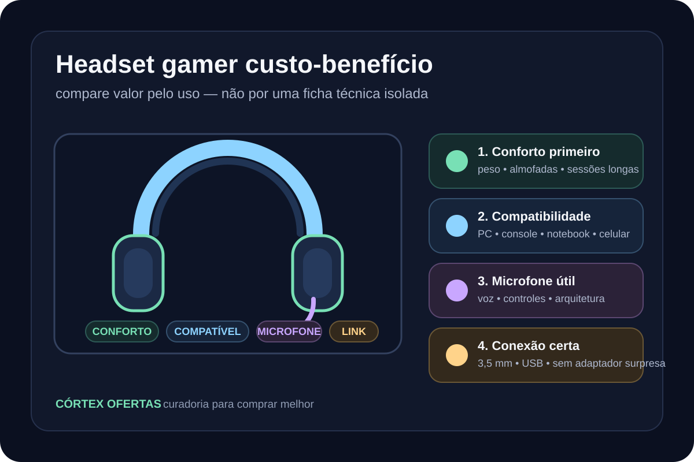

Headset gamer custo-benefício: como comparar valor sem cair na ficha técnica
Guia editorial Córtex para comparar headsets por conforto, microfone, conectividade, compatibilidade e adequação ao uso, sem depender de preço promocional ou ranking automático.

Comece pelo uso, não pelo número do driver
Antes de comparar especificações, defina o cenário: sessões longas, chat competitivo, console, notebook, celular ou uso híbrido. O valor de um headset depende de compatibilidade, conforto e recursos que serão realmente usados. Um número isolado de driver ou faixa de frequência não determina sozinho a melhor compra.
Conforto precisa entrar na decisão
Peso, material das almofadas, formato circumaural e construção mudam a experiência em sessões prolongadas. Como exemplos de perfis diferentes, a HyperX informa aproximadamente 308 g para o Cloud III sem o microfone, com espuma de memória e estrutura de alumínio; a JBL informa 220 g para o Quantum 100, também com proposta over-ear e almofadas de memory foam. Essas diferenças ajudam a estruturar a comparação, mas não substituem ajuste pessoal.
Conectividade e compatibilidade evitam compra errada
O Cloud III com fio oferece conexão 3,5 mm e USB e declara compatibilidade com PC, PlayStation, Xbox, Nintendo Switch, Mac e dispositivos móveis. O JBL Quantum 100 usa conexão 3,5 mm e é posicionado para múltiplas plataformas. Para a Córtex, compatibilidade confirmada com o equipamento do comprador é um critério anterior a qualquer recomendação comercial.
Microfone é parte do produto, não um detalhe
Para partidas com voz, reuniões e streaming casual, o microfone pode pesar tanto quanto a reprodução de áudio. O Cloud III declara microfone condensador de eletreto unidirecional com cancelamento de ruído e indicador de mudo; o Quantum 100 usa boom microfone direcional destacável. O ponto editorial é comparar arquitetura e controles do microfone com o uso previsto, sem prometer desempenho que a ficha oficial não demonstra.
Checklist Córtex de custo-benefício
A comparação evergreen deve responder se o headset resolve o uso real com o menor conjunto de compromissos relevantes.
- compatibilidade com as plataformas do usuário
- conforto e peso para a duração típica de uso
- tipo de conexão e necessidade de adaptadores
- microfone e controles necessários para voz
- construção e manutenção esperada
- recursos extras que serão realmente utilizados
Opções comerciais em validação
Os links permanecem desativados nesta prévia até os gates de segurança, destino e release serem concluídos.